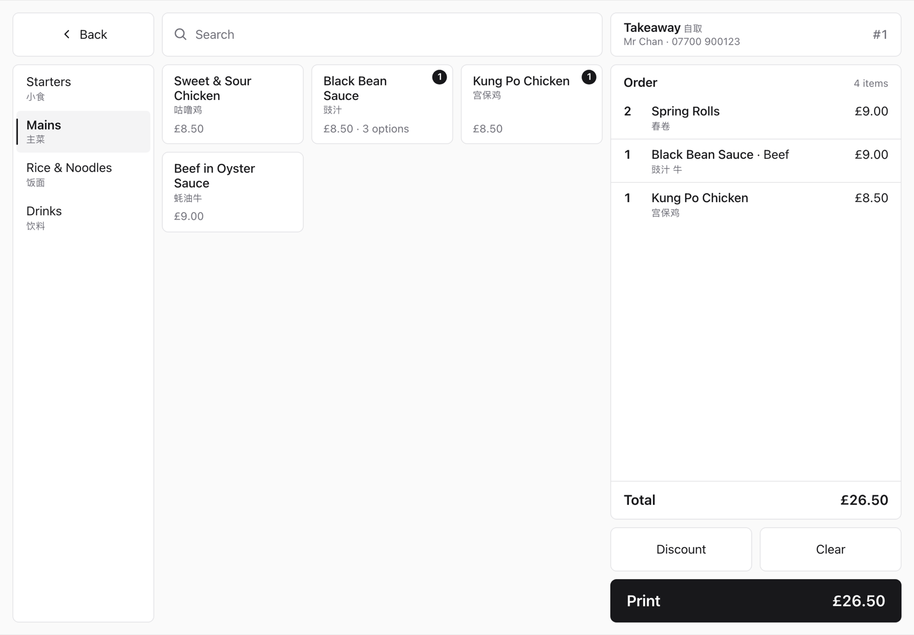
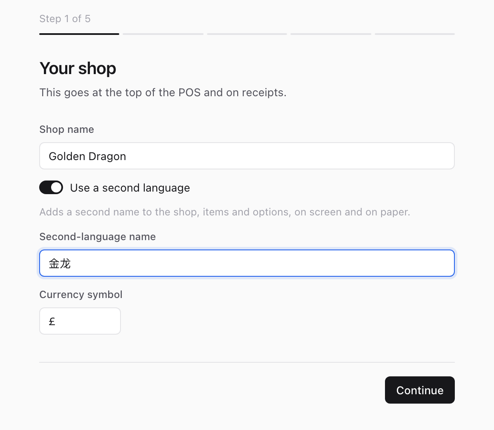
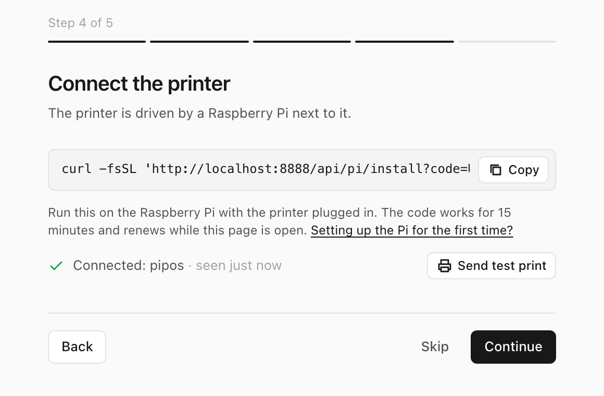
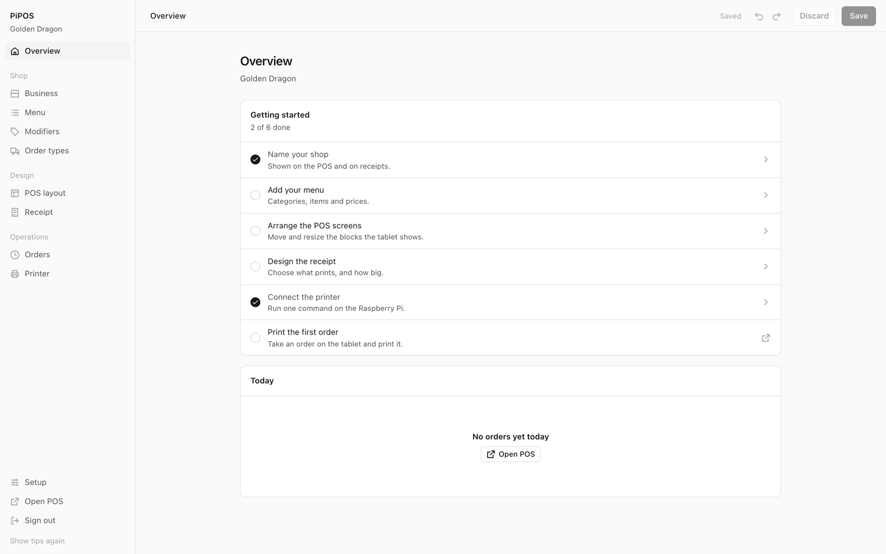
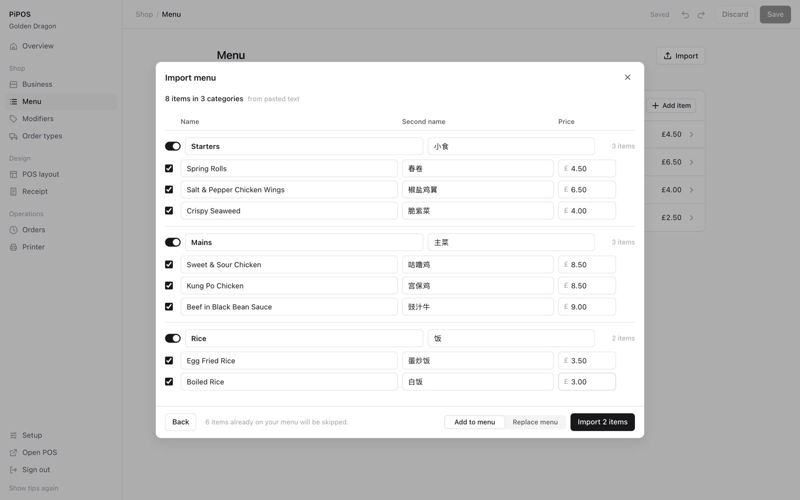
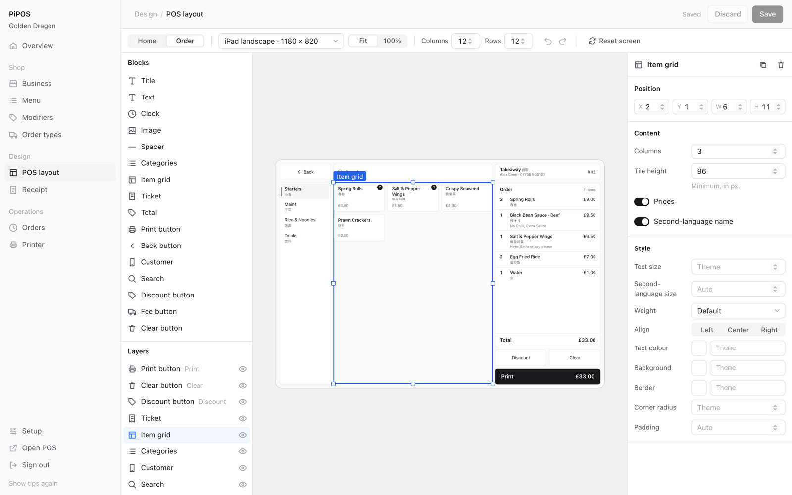
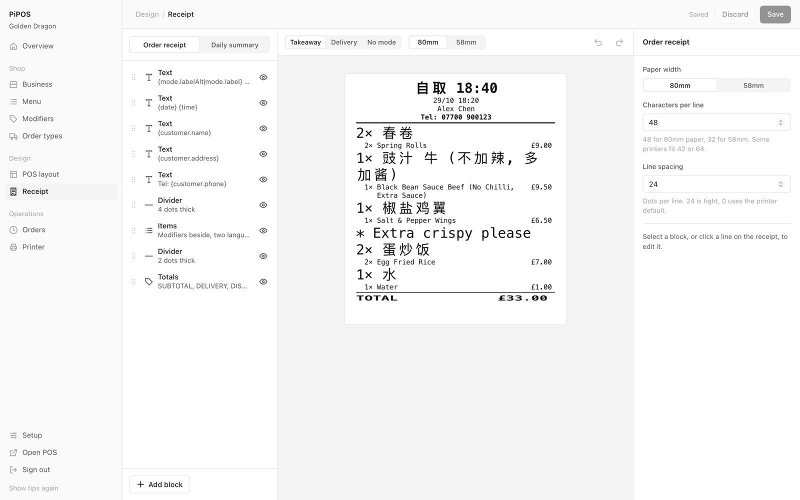

PiPOS
A point of sale for small shops and takeaways. Take orders on a tablet, print receipts on a thermal printer. Free and open source.
Everything is set up from the admin panel in the browser: the menu, the layout of the tablet screens, and what the receipt looks like. You drag blocks around, change text sizes and colours, and the tablets pick up the changes within a minute.

tablet → your Netlify site → Raspberry Pi → printer
↑
/admin
You need a free Netlify account, a tablet (any browser), a Raspberry Pi and a USB or network ESC/POS printer (Epson TM-T20, Star, Xprinter and most cheap 58/80mm ones).
Getting started
About ten minutes, three steps.
-
Deploy to Netlify. It asks you to pick an admin password, then builds the site. That's the only setting you need.
-
Go to
your-site.netlify.app/adminand log in. A short setup walks you through your shop name, how you take orders and your paper size. There's a sample menu to start from.
-
The setup gives you one command. Paste it on the Raspberry Pi and it installs everything and prints a test page. The admin shows Connected when it's done. New to the Pi? Start here.

Then open your site on the tablet and enter the admin password once. On iPad, use Share → Add to Home Screen so it opens full screen.
Optional settings (Netlify → Site configuration → Environment variables): PRINTER_KEY sets the Pi's key yourself instead of having one generated, SESSION_SECRET signs everyone out when changed, and PIPOS_REPO is the repo the Pi installs from, if you run a fork.
Admin
The Overview page keeps a checklist of what's left to set up. Each page also has a short walkthrough the first time you open it; Show tips again at the bottom of the sidebar replays them.

| Business | Name, second-language name, phone, currency. Turn features on or off: order types, modifiers, second-language names, print queue, daily summary. |
| Menu | Categories and items. Drag to reorder. Items can have choices (pick one before adding, like Chicken / Beef / Prawn) with their own price. |
| Modifiers | Add or remove options staff can put on an item, like "No onion" or "Extra sauce +£0.50". Each one can apply to every item or only some. |
| Order types | Takeaway, delivery, or whatever you need. Set what to ask the customer, the ready time, a fee and how many copies to print. |
| POS layout | Design the tablet screens. See below. |
| Receipt | Design the printed receipt and the daily summary. See below. |
| Orders | Every print job, with reprint and retry. |
| Printer | Paper width, encoding, test print, and the settings to copy onto the Pi. |
Importing a menu
On the Menu page, Import reads a PDF menu and pulls out the categories, names and prices. If your menu is a scan or a photo, paste its text instead. You get to check everything before it's added, and untick anything it got wrong. It all happens in your browser, nothing is uploaded.

POS layout
The tablet has two screens, Home and Order. Each one is a grid (12 columns by default) and everything on it is a block: the item grid, the order ticket, category tabs, the print button, text, a clock, an image.
- Drag a block from the left panel onto the screen.
- Drag to move it and use the handles to resize. It snaps to the grid.
- Select a block to change its settings and style on the right: text size, second-language text size, weight, colours, corners, padding.
- Click empty space to edit the theme: colours, font, base text size, spacing.
- Pick a device size at the top to see how it looks on your tablet.

Keyboard: arrows move, shift + arrows resize, ⌘D duplicates, delete removes, ⌘Z undoes.
Receipt
A receipt is a list of blocks printed top to bottom. Drag to reorder, click one to edit it, and the preview updates as you go. Click a line in the preview to jump to the block it came from.

Every line has its own size (1× to 8× width and height), bold, underline, white on black, and alignment. The default template prints the order type and ready time big at the top, the customer details, then each item with its second-language name large and the English name and price underneath.
Receipts are laid out in the browser when the order is placed, so changing the template never needs anything updated on the Pi.
Receipt templates
Blocks
| Text | Any text, with tokens like {customer.name}. Lines where every token is empty are skipped. |
| Items | The order lines. Separate formats and sizes for the second-language line, the main line, modifiers and notes. |
| Totals | Subtotal, fee, discount and total. |
| Divider | A solid line. Set thickness and spacing. |
| Blank space | Empty lines between things. |
| Image | A logo, converted to black and white for the printer. |
| QR code | Any text or link, with tokens. |
The daily summary also has Totals by order type and Order list blocks.
Any block can be limited to certain order types, e.g. only print the address on delivery orders.
Tokens
{business.name} {business.nameAlt} {business.phone} {business.address} | From Business settings |
{mode.label} {mode.labelAlt} {mode.short} | Order type |
{eta} | Ready time, e.g. 18:40 or 19:00-19:20 |
{date} {dateLong} {time} | 29/10, 29/10/2026, 18:20 |
{order.number} {order.id} | Daily order number, unique id |
{customer.name} {customer.phone} {customer.address} | What was entered for the order |
{items.count} {total} | Item count and order total |
{summary.date} {summary.count} {summary.total} | Daily summary only |
Use | for a fallback: {mode.labelAlt|mode.label} prints the second-language name, or the English one if there isn't one.
Raspberry Pi
The Pi sits next to the printer and prints orders as they come in. It waits for a push from ntfy.sh instead of polling, so it only talks to Netlify when there's an order. Any Pi with Wi-Fi works; a Pi 3 A+ or Zero 2 W is plenty.
1. Prepare the SD card
On your computer, install Raspberry Pi Imager and choose Raspberry Pi OS Lite (64-bit). Before writing, open the settings and:
- set the hostname to
pipos - turn on SSH with a password
- enter your Wi-Fi name and password
Write the card, put it in the Pi, plug the printer into the Pi's USB port and turn it on. Give it a minute to boot.
2. Log in to the Pi
Open Terminal (Mac) or PowerShell (Windows) and run:
ssh pi@pipos.localUse the username you set in the imager. If pipos.local isn't found, use the Pi's IP address from your router.
3. Paste the command
Copy the command from Admin → Printer (or the setup) and paste it into the Pi. It looks like this:
curl -fsSL 'https://your-site.netlify.app/api/pi/install?code=ABC123' | bashIt installs Node, downloads PiPOS, finds the printer, starts on boot and prints a test page. The code is valid for 15 minutes; get a fresh one if it runs out. Running it again later updates the Pi.
Install by hand instead
curl -fsSL https://deb.nodesource.com/setup_20.x | sudo -E bash -
sudo apt-get install -y nodejs git
git clone --depth 1 https://github.com/SnakeLuck360GT/pi-pos.git
cd pi-pos/pi-bridge
npm install --omit=dev
cp .env.example .env # fill in the values from Admin → Printer
sudo usermod -a -G lp $USER
node index.js --test # test page
sudo cp pipos-bridge.service /etc/systemd/system/
sudo systemctl enable --now pipos-bridgeSettings
These live in ~/pi-pos/pi-bridge/.env. The installer fills them in; you'd only change them for a network printer or an odd setup. Restart afterwards with sudo systemctl restart pipos-bridge.
| Name | Default | |
|---|---|---|
API_BASE | Your Netlify site, no trailing slash | |
PRINTER_KEY | Must match Netlify | |
NTFY_TOPIC | Shown in Admin → Printer | |
NTFY_URL | https://ntfy.sh | If you run your own ntfy server |
PRINTER | /dev/usb/lp0 | USB printer, or tcp://192.168.1.50:9100 for a network one |
ENCODING | from admin | gb2312 if Chinese prints as garbage |
CUT | partial | partial, full or none |
FALLBACK_POLL_MS | 300000 | Safety-net check every 5 minutes. 0 turns it off |
Useful commands
journalctl -u pipos-bridge -f # live logs
sudo systemctl restart pipos-bridge # restart
cd ~/pi-pos/pi-bridge && node index.js --test # test pageTo update, run the install command again.
Troubleshooting
| Nothing prints | Check Admin → Printer shows Connected. If not, run journalctl -u pipos-bridge -f on the Pi. Running the install command again fixes most setups. |
| Install says the code expired | Codes last 15 minutes. Get a fresh command from Admin → Printer. |
No /dev/usb/lp0 | Check the cable and that the printer is on. Run ls /dev/usb/. |
| Permission denied | sudo usermod -a -G lp pi and reboot. |
| Chinese prints as boxes | Set encoding to GB2312 in Admin → Printer, or ENCODING=gb2312 on the Pi. |
| Text wraps oddly | Set the right paper width in Admin → Printer (80mm = 48 columns, 58mm = 32). |
| Tablet says it's not connected | The admin password or SESSION_SECRET changed. Enter the password again. |
| A Netlify bar shows at the bottom | PiPOS keeps Netlify's review toolbar off by default. If a bar still appears, your Netlify project is probably still private: make it public (the tablets need that anyway). To turn the review toolbar off completely, go to Project configuration → Developer settings → Collaboration tools → Configure. |
| Pi keeps rebooting | The power supply is too weak. Use a proper 2.5A one. |
Development
git clone https://github.com/SnakeLuck360GT/pi-pos.git
cd pi-pos
npm install
cp .env.example .env # set ADMIN_PASSWORD
npx netlify dev # site + functions on localhost:8888
npm testReact and Vite for the app, Netlify Functions and Blobs for storage, plain Node on the Pi. No database to set up.
Code layout and the data formats are described in docs/SPEC.md. Pull requests welcome.
MIT licence.